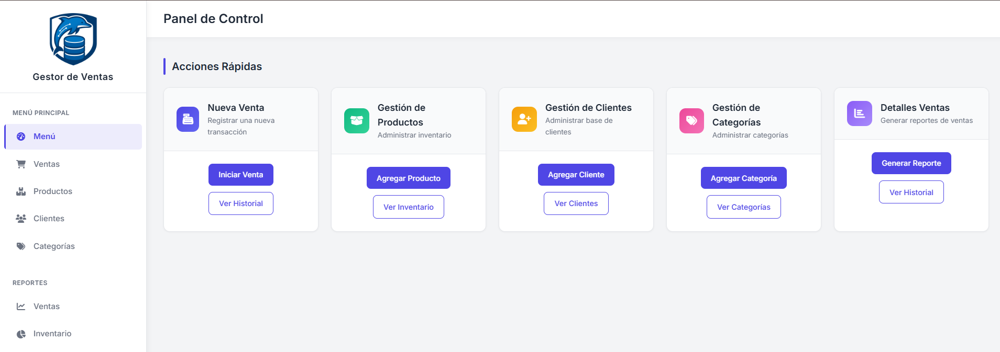
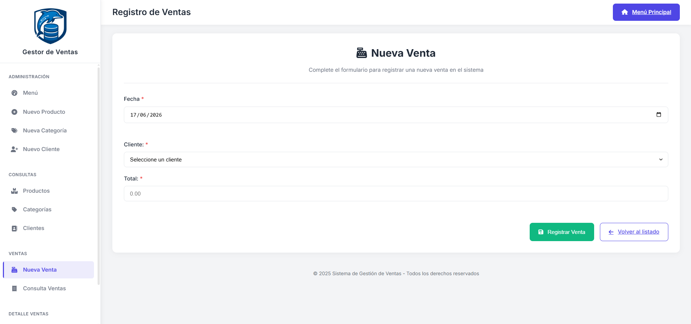
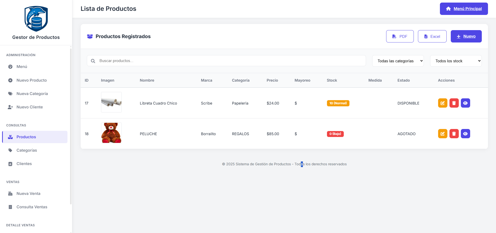
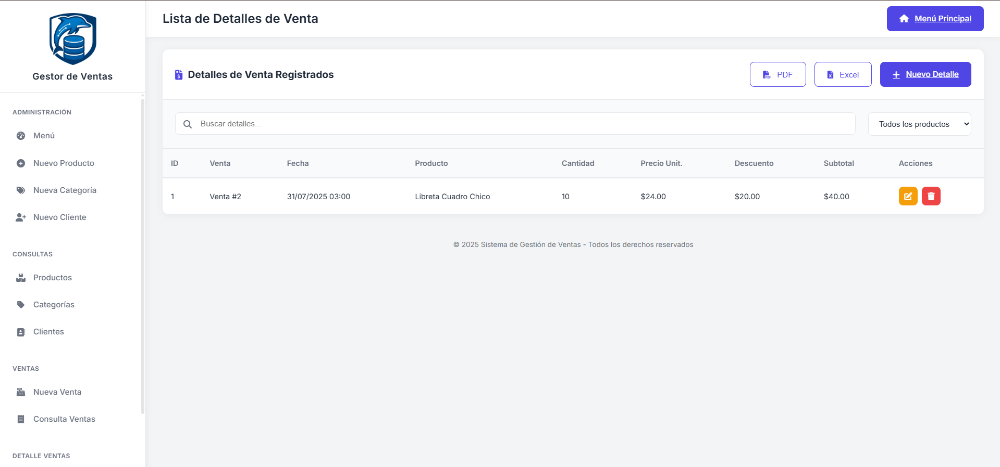

Dashboard / menú principal
Registro de nueva venta
Gestión de inventario
Historial y detalle de ventasSistema de punto de venta desarrollado con Spring Framework y Java, que permite gestionar el ciclo completo de ventas de un negocio: desde el registro de productos e inventario hasta la atención a clientes y la generación de reportes de transacciones. La aplicación corre en un servidor local y centraliza todas las operaciones comerciales en una sola interfaz web.
El sistema está organizado en cinco módulos principales, cada uno con acciones de alta y consulta:
Este proyecto me permitió aplicar el patrón MVC con Spring Framework por primera vez, separando la lógica de negocio de la capa de presentación. Aprendí a configurar controladores, mapear rutas y conectar la aplicación a una base de datos MariaDB. También reforcé el diseño de modelos relacionales con múltiples entidades (ventas, productos, clientes, categorías) y la generación de reportes desde la capa de datos.